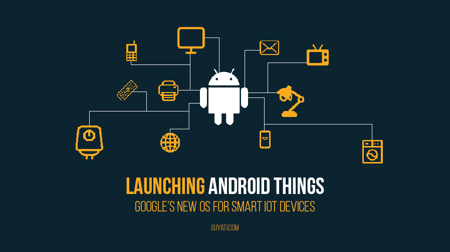
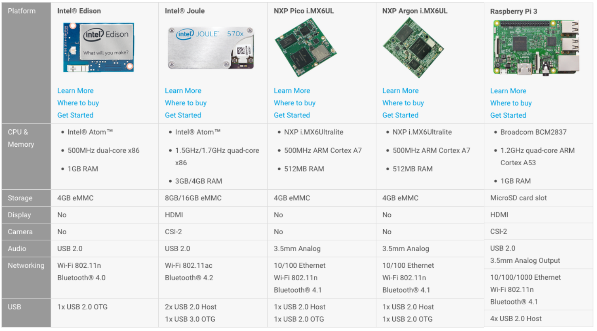

最近打算稍微了解一下 Google 在推的 Android Things ，這是一套以 Android 為基礎改製而成的作業系統，目的在於用於現在很夯的物聯網(Internet of Things, IoT) 上。
關於 Android Things
Android Things 前身為 Google 的 Brillo 專案 ，在約 2016 年底改名為 Android Things 。這東西到底是什麼?
簡單的來說，隨著 Android 的普及，會使用 Java 寫 Android app 的人越來越多， Android Things 就是為了這些開發者存在的物連網系統，就如網頁的豪語:
If you can build an app, you can build a device. ── Google
(只要你有能力打造出 App，你就能打造出一個裝置。)
事實上，你的確可以使用 Java 來寫 app 然後丟到支援 Android Things 的開發板上，來透過 GPIO、I²C、PWM 等控制周邊，這過層中底層的部分都幫你包好了，你只要會寫 Java 就可以開發物連網(IoT)裝置。
於是只要花個 22k 請個會寫 Java 的人，你就可以當老闆賣設備了 。
當然，Google 不可能這麼佛心為了那些只會寫 Java 的人設計一個物連網系統， Android Things 的目的同時也是為了推廣 Android，就如 Android Things - The new OS for smart IoT devices from Google 這篇文章的圖片那樣:

只要透過你的 Android 手機/平板，你就可以盡情的控制這些 Android Things 設備。
(當然這些東西你還是有辦法在 iOS 上進行控制的， 記得再花個 40k 請個會寫 obj-c/swift 的人)
支援的開發板
那如果我們想要入門 Android Things 的話，需要哪些開發板呢?
撰寫這篇文章的時候，官方支援的開發板有 以下幾種 :

在這些開發板中，考量到價錢以及實用性，我決定採用 Raspberry Pi 3 Model B 來作為我用來學習 Android Things 的開發板。
隱憂
雖然 Android Things 是由 Google 所提出的專案，但很多 Google 提出的專案也有面臨過被廢棄的命運，比如 Project Arc (積木手機) 這個計畫也被 Google 廢棄了， Android Things 是否值得追隨也是個很大的問題。
此外，對於物連網裝置 (Internet of Things, IoT)，我們常用的設備都是不到 1MB 記憶體的微控制器(MCU)裝置，而 Android Things 最低要求要 256MB 的記憶體 以及動輒 100MB 大小的儲存裝置 ，以成本來考量這其實是蠻浪費的。 (還不如去用 mbed 還比較划算)
還有一個是 開機時間 ，如果你的系統是設計讓人隨時可以關機的，那你要考慮清楚是否要對 Android Things 作些額外處理，在 Android Things 學習筆記: GPIO 的輸出控制 我們實作了 Raspberry Pi 3 搭配 LED 閃爍功能，如果斷掉系統電源再重新上電的話，到 LED 開始閃爍花了 1.06 分鐘 。(也就是系統啟動到執行程式需要花很多時間，正式產品是一定要多作些優化的)
在 Embedded Linux Conference 2017 上的 Android Things - Internals and cute embedded nonsense hacks 演講也有提到這些問題。